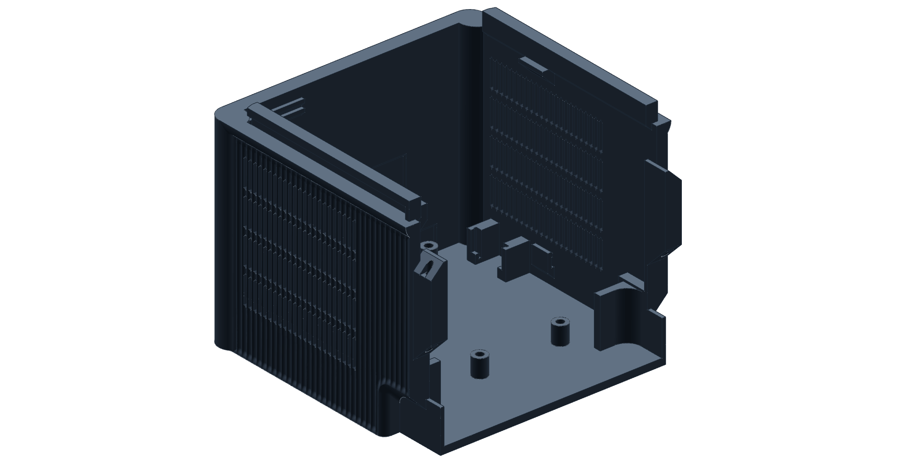
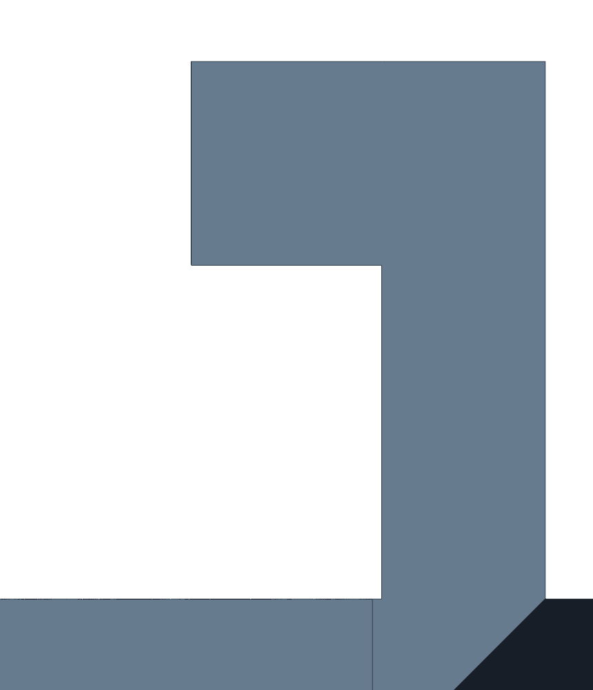

Part study · Enclosure front-bottom
One pair of supported faces.
It takes about a day to print and it overhangs all over: handholds, vents, rails, seam knuckles. All but two of those places land on plastic. The two are flat because their job needs them flat.
Seen in PET-GF · the print sent to Mark2 on 11 November 2026 · textured PEI · left 0.4 mm

11223456{{frontslice:/layers}}
layers in that print
{{front:/summary/support_bodies}}
supports, both standing on the part
AS IT SITS ON THE BED
BUILD DIRECTION ↑

Section through a railThe lane is open along its whole length, so a screwdriver levers the tree out sideways in one piece.
Rail catches SUPPORT
The only two supported faces. They are flat on purpose: they hold the top half down, and a sloped catch would cam open. Each gets a short tree that stands on the ledge just below it.
Handhold roofs LEAN
A 45° corbel, printed in ordinary layers. It replaced a flat ceiling that had needed tree supports, a band of six walls and snap-off fins along its edge.
Vents LEAN
The vent is the flutes, pierced. Each slot runs up the floor of a groove and ends in a 45° point, so nothing has to bridge.
Flutes STRAIGHT UP
Grooves that run straight up the build cost nothing. They stop short of the bed so the first layer is a plain outline, and they hide the seam between front and back in a shadow.
Bosses STRAIGHT UP
Stand on the floor slab and are bored along the build direction, which keeps the holes round.
Seam knuckles LEAN
Every hidden underside rises at the same 45°. Where a screw hole crosses one it runs on as a slot, because a round hole through a slope leaves a skin a third of a millimetre thick.
“…precisely one pair of supported faces, that are quite intentional and the absolute easiest to remove (with tool) support removal situation we’ve found so far.”
A support is not a defect. In September a tool counted supports and scored fewer as better. To lose one, a catch on the rear rail became a ridge, which can cam open. The flat went back, with its support. A count of supports falls whenever the thing being supported is deleted.
Still openThe record holds this piece’s reviewed slice and a rail coupon whose support came out whole on 10 November. The full-size print’s own result is not written down yet.